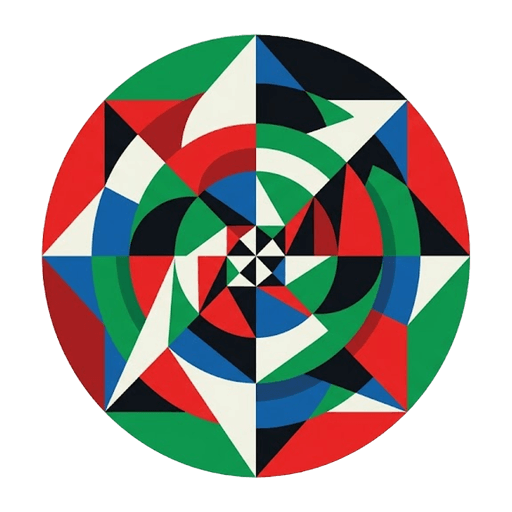

FeasonSELECTED FROM YOUR PAGE
ONE FAITHFUL MOMENT
A little room for today.
Return to Scripture and the practices you have begun.
Getting started with Feason
KEEP THE WORD NEAR
Practice a little.
Recall a verse, reveal it, then choose how it went. Reviews here stay private.
GATHER YOUR STUDY
A place to return.
Keep a passage, Feasy conversation, words, sources, and your notes together.
Export your study
ROOM TO READ
Keep Scripture near.
Look up a verse, a passage, or a chapter.
WORLD ENGLISH BIBLE · PUBLIC DOMAIN
Offline chapters
Download up to 10 full WEB chapters (150 MB total). Only public Scripture and recordings are cached. Private notes and reviews need a connection.
THINK WITH SCRIPTURE
Ask Feasy.
Explore a question with Scripture kept in view. Selected text is sent only when you ask.
PRIVATE · ONLY FOR YOU
Worth returning to.
Keep pages, quotations, collections, and private notes in your Feason library. Saving never posts a Gleam.
Your reading inbox
WORDS IN THEIR CONTEXT
Look a little closer.
Explore a biblical lemma, transliteration, or Strong’s code without saving or publishing anything.
Feason
Opening a little room to study…
A LITTLE LIGHT, SHARED
A thought worth
carrying.
A reflection. A prayer. A question.
Bring what’s on your heart to the fellowship.
Your Feason account, wherever you are.
SHARED WITH THE FELLOWSHIP
Reflection posted.
A little light, carried further.